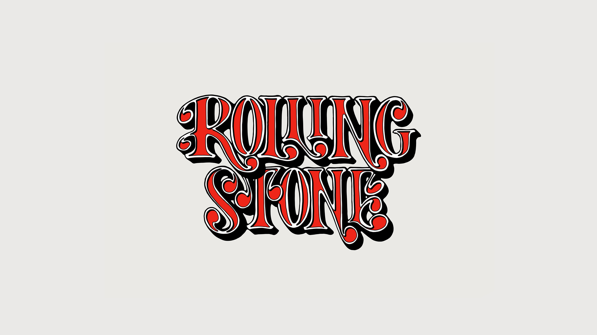
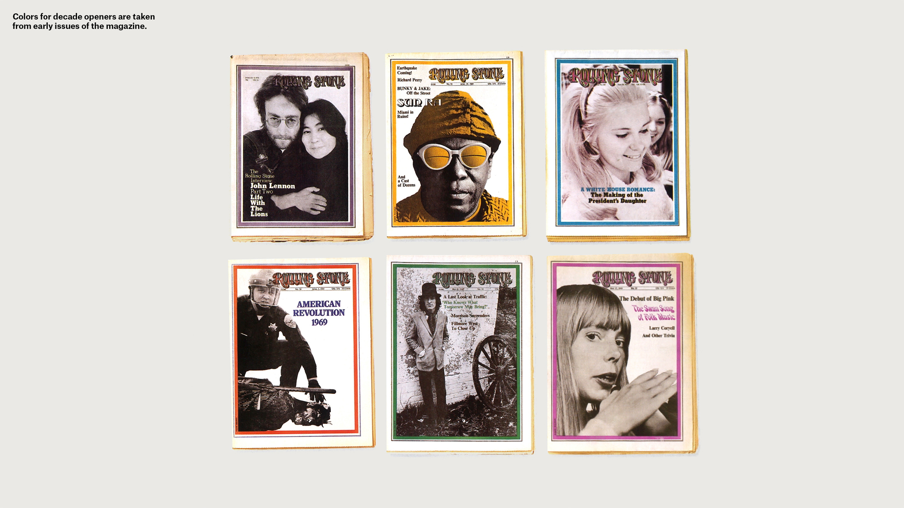
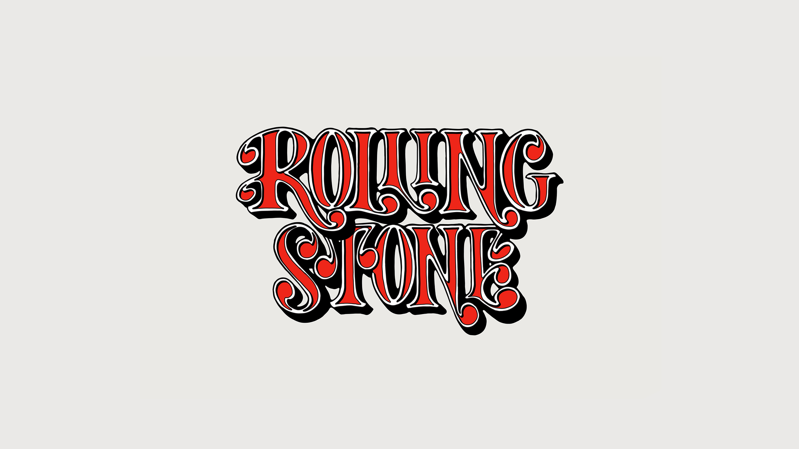
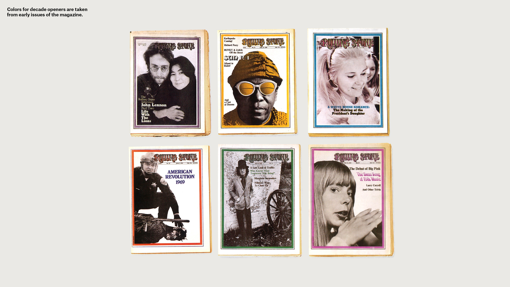

Rolling Stone 50
Since 1967, Rolling Stone has been a leading voice in journalism, cultural criticism and music. This book documents fifty years of the magazine's rise to prominence as the voice of rock and roll and a leading showcase for era-defining photography. The book design combines iconic visual elements from the magazine's fifty year history.
- Role ......................... Designer
- Creative Direction ........... Luke Hayman
- Team ......................... Simon Blockley
- Studio ....................... Pentagram

 


